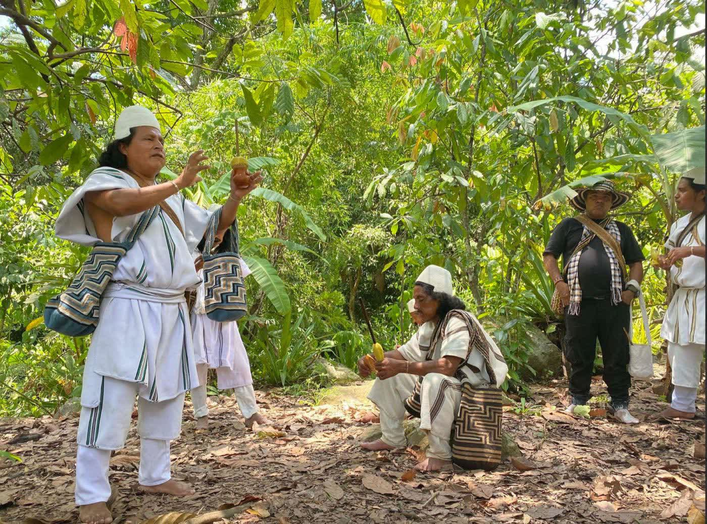
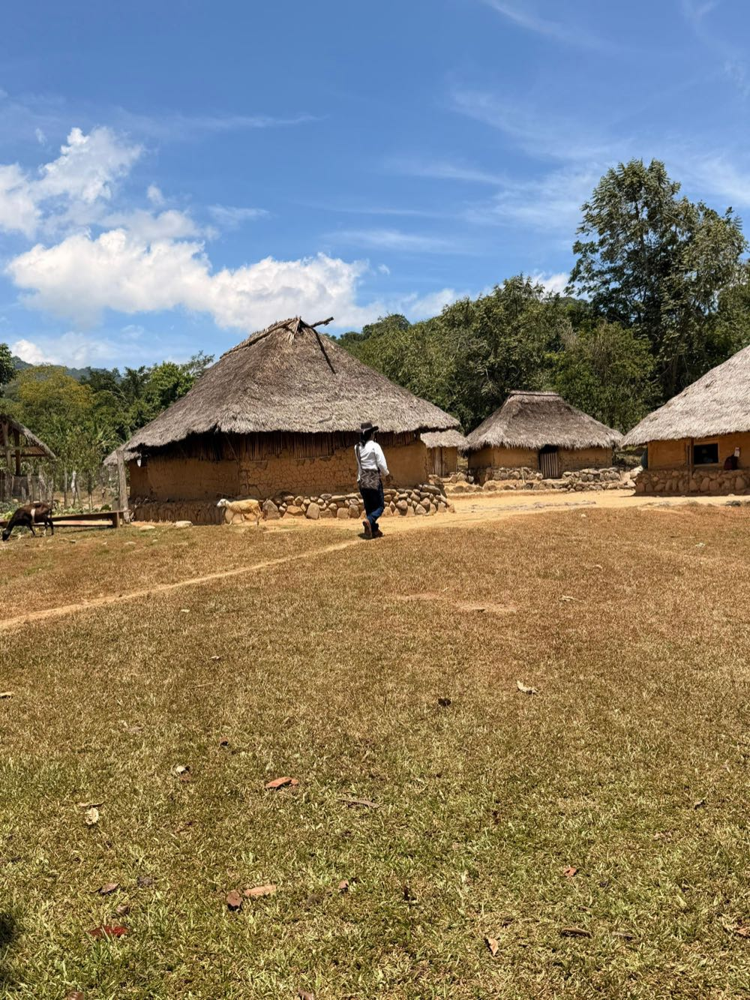
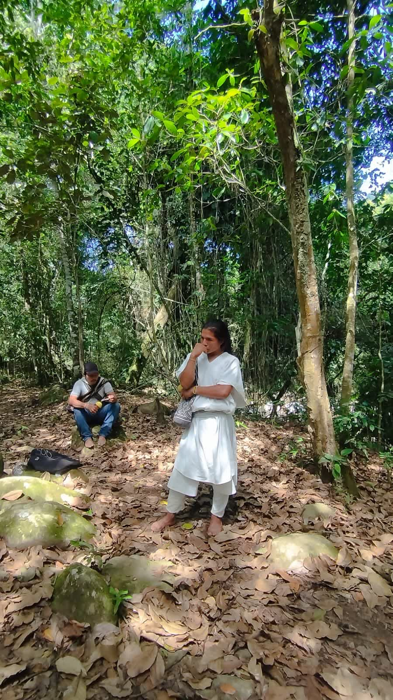
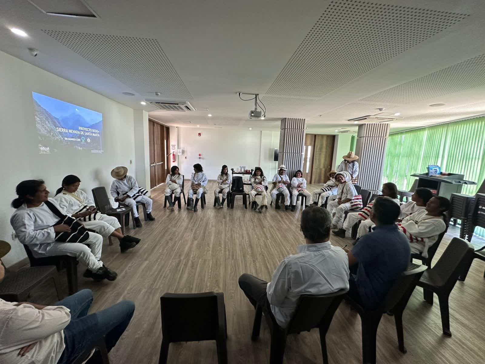
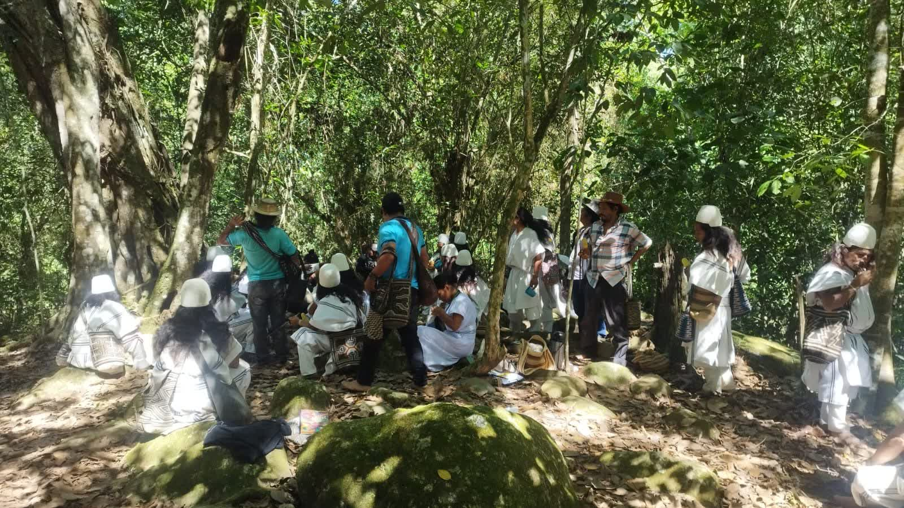

Ancestro que Seremos
Indigenous-led forest restoration in the Sierra Nevada de Santa Marta. Nine Arhuaco communities, one watershed, a forty-year commitment.
A mountain governed for centuries, waiting for capital that respects it
The Sierra Nevada de Santa Marta is a UNESCO Biosphere Reserve and Colombia's highest coastal mountain range. Four peoples (Arhuaco, Kogui, Wiwa and Kankuamo) have governed it under their own legal and spiritual systems for generations.

The problem
Substantial areas inside these territories have been out of forest cover for more than ten years, after conflict, displacement and shifting land use. Without structured capital and a community-anchored governance framework, that restoration potential stays unrealised.
The opportunity
Colombia's NDC commits to a 51% emissions reduction against business-as-usual by 2030, and CONPES 4063 makes ecosystem restoration a national priority. Indigenous-led restoration under territorial governance and free, prior and informed consent is a category where supply stays structurally constrained.
Ancestro que Seremos at a glance
- Location
- Cuenca Durankwa Meyna (Río Ariguaní headwaters), Pueblo Bello, Cesar, Colombia · Sierra Nevada de Santa Marta
- Rights holders
- 9 Arhuaco communities, Resguardo Arhuaco Businchama · 7 active in Phase 1
- Project area
- 4,533 ha across 90 collectively titled predios · about 30 predios under integration · around 10,000 ha of community polygons consolidating for a later phase
- Standard
- Equitable Earth v1.3.1 · Methodology M001 v1.2, terrestrial forest restoration · programme CCP-Eligible (ICVCM, June 2025), methodology label pending
- Term
- 40-year crediting period, renewable · 20% of every issuance goes to the Equitable Earth buffer pool
- Status
- Feasibility stage · Validation Agreement signed 7 August 2026 · Equitable Earth contract set executed 3 September 2026 · no planting yet
- Developer
- Equiterra Capital LLC, project proponent · Saumama Foundation as neutral community-side guarantor
From dry forest to humid mountain, in one watershed
The project area climbs through three altitude strata, each with its own biome and its own restoration logic. Select a band.
Humid mountain, over 1,000 m
Biome T1.2, humid montane forest. The largest stratum and the headwaters of the Río Ariguaní.
Land cover today
ESA 2021, whole area.
How degraded is it?
Carbon potential class, measured against reference biomass.
Roughly 1,900 ha (42%) are degraded enough to count as restoration in the strict sense. The remaining 2,600 ha are forest close to its reference condition, where the project's effect is protection and assisted regeneration. The split comes from satellite measurement and stays subject to the field baseline.
Assisted regeneration first, planting where needed
The forest wants to come back. The project's first job is to let it: protect, manage fire and grazing, and plant only where regeneration alone will not reach.

Assisted natural regenerationThe default: protection, fire and grazing management, survival management.
Enrichment plantingNative species on degraded slopes, with soil stabilisation where needed.
Agroforestry pilotsCacao, coffee and avocado on land already cleared, to lift returns without new clearing.
Methodology rulesNo commercial harvest, no biomass burning, no nitrogen fertiliser (M001).
Pilot plantingPilot nurseries and planting on at least 2% of the area (about 90 ha), planned for 2027.
Species chosen with communitiesNursery siting is constrained by altitude and dry-season water.
Proven know-howPractical experience from the Saumama team's participation in Musesi, about one million trees planted in the Sierra.
Technology under explorationAgronomy and nursery contractor to be procured; irrigation and fertigation under study.
Satellite coverageThe full 4,533 ha monitored by Equitable Earth from registration, at pixel level.
Communities as data collectorsNine communities trained in georeferenced data collection. They draw the polygons and report change.
Permanent plotsProposed: 20 plots of 500 m² per stratum in year one, to reach Tier 2 at first verification.
Restored-condition criteriaDefined per predio with the communities before the feasibility submission.
What is done, what is under way, what is still ahead
- Socialisation assembly, 4 May 2026, Gunchukwa
- Validation Agreement signed, 7 August 2026, Kunkurwa de Nawaku
- Participatory mapping delivered; polygons being finalised by the communities
- Equitable Earth contract set executed, 3 September 2026
- Household survey and topographic data collection, community-run and paid
- Feasibility study: technical, legal and financial analysis
- Capacity building in Bogotá for five Arhuaco leaders, October 2026
- Benefit-sharing model and Contrato de Asociación agreed
- Safeguards guide adopted; Project Design Document developed
- Equitable Earth feasibility and design; validation initiated
- Pilot nurseries and planting on at least 2% of the area (about 90 ha)
- Restoration at scale begins, subject to development and planting capital
- Project Design Document validated by an accredited body
- First monitoring and verification of restoration outcomes
- First issuance of verified credits, targeted
- PDD reviewed and adapted every four years
The communities hold the rights. The project is built around that.
Equiterra Capital
Project proponent. Structures the project, mobilises capital and carries the carbon development work.
Saumama Foundation
Neutral counsel to the communities, with accompaniment and institutional guarantee at every stage.
9 Arhuaco communities
Implementers and primary beneficiaries, working through their own cabildos and comisarios. No external labour model.

A partnership, not a contract for labour
A benefit-sharing model is agreed in concept: communities take part in the project's returns from the first year and share in the credits, as partners rather than contractors. Paid community data collection and paid governance time are part of the development budget. Figures are set once the cost to validation is known.
Consent record
Acta de Socialización, 4 May 2026, Gunchukwa, where women leaders also spoke at the assembly.
Acuerdo de Validación, 7 August 2026, Kunkurwa de Nawaku, signed by mamos, cabildos and comisarios.
Guía de Salvaguardas Sociales y Ambientales, built jointly and binding under the Acuerdo (Cláusula Séptima).
Carbon rights
The communities hold the rights: collective title under the 1991 Constitution, and carbon follows land and forest rights.
Equiterra will hold a contractual right to develop, register and commercialise units on the communities' behalf, with an agreed share, under the Contrato de Asociación that follows feasibility.
Decreto 488 of 5 May 2025 gives communities a right of cultural objection after FPIC. The process was built for that standard (Constitutional Court T-248 of 2024).
A formal legal opinion from Colombian counsel is to be commissioned, and Equitable Earth runs its own tenure assessment at feasibility.
Grievance and protection
The Equitable Earth Grievance Mechanism Requirements and Procedures v1.0 apply, independent of the developer.
Saumama as neutral counsel means the communities have advice that is not the developer's.
Any predio with third-party occupation, claim or dispute is excluded at polygon level.
What people do on the land, and what pushes degradation

Current activities
- Subsistence and small-commercial agriculture: coffee, cacao, plantain, cassava, maize, beans
- Small-scale livestock, some honey, traditional weaving and craft
- Territorial governance and care of sacred sites through mamos and cabildos
- Pueblo Bello has a working coffee economy and cacao collection, so agroforestry strengthens an existing value chain
Drivers of degradation
- Agricultural frontier pressure at the lower boundary, with forest converted to pasture
- Short-fallow subsistence agriculture and fuelwood extraction
- Historic cycles of ranching, illicit crop booms, selective logging and conflict-driven displacement
- Leakage is monitored by satellite across a 5 km belt under M001
Operating conditions
- Pueblo Bello is the base, 45 minutes by paved road from Valledupar
- Into the basin by unpaved track, then mule or on foot
- Large parts of the territory have no grid electricity and no mobile signal
- Access routes and travel times per community are being mapped in the survey
Measured conservatively, validated before it is claimed
Every carbon figure on this page is an ex-ante estimate. None has been validated or certified.
Standard and method
Equitable Earth, Methodology M001 v1.2, terrestrial forest restoration. Credits are issued as ECUs, net of baseline, uncertainty and a 20% buffer contribution.
Early-year net rate
Preliminary estimates point to roughly 6 tCO₂e per hectare per year, net, in the first five years. That is an early-year rate, not a 40-year average: the lifetime average is lower, and is being confirmed through baseline finalisation and field calibration.
Leakage and permanence
A 5 km leakage belt is monitored by satellite, with a formal estimate at feasibility. The buffer pool covers reversal risk.
Capital for high-integrity nature projects
Article 6, sovereign structuring and community-anchored carbon assets in Latin America and Africa.
ancestro@equiterra.capital → equiterra.capital